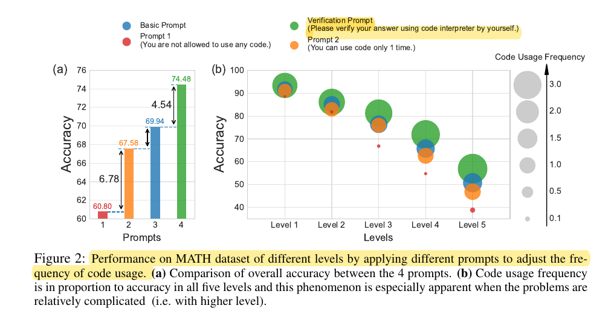
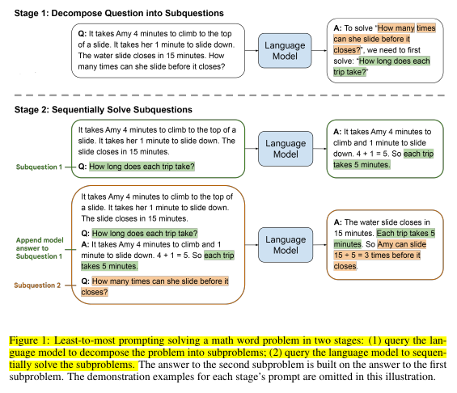

State of the art
AlphaCode 2

- Finetune many models to generate code given a problem description
- For each problem it generates up to 1M possible solutions. We don't have that much compute for our task.
- Filter all the solutions that do not pass the public test or compile. This removes 95% of the solutions. We cannot do this on AIMO because we don't have any input and output data. If we decide to use code as the output of the model we might discard code with problems, but nothing more.
- Clustering of the solutions. They generate new input data and use the output on that data to clusterize the solutions. This again will be hard to do, or impossible for our problem because not all the problems have this property.
- Score the candidates. They have another model to estimate correctness of the solutions. This is something we can replicate.
They used Gemini Pro as the base model. This resulted on a big improvement over previous version of AlphaCode that I believe it used Palm. It is likely that even better results would have been obtained with Gemini Ultra, but at a higher computational cost.
Learnings
- Generating a lot of solutions and scoring them could be a good strategy
- Having a good base model is very important, changing from Palm to Gemini brought big improvements.
AlphaGeometry
AlphaGeometry is a neuro-symbolic system made up of a neural language model and a symbolic deduction engine, which work together to find proofs for complex geometry theorems. Akin to the idea of “thinking, fast and slow”, one system provides fast, “intuitive” ideas, and the other, more deliberate, rational decision-making.

AlphaGeometry solving a simple problem: Given the problem diagram and its theorem premises (left), AlphaGeometry (middle) first uses its symbolic engine to deduce new statements about the diagram until the solution is found or new statements are exhausted. If no solution is found, AlphaGeometry’s language model adds one potentially useful construct (blue), opening new paths of deduction for the symbolic engine. This loop continues until a solution is found (right). In this example, just one construct is required.

AlphaGeometry’s system combines the predictive power of a neural language model with a rule-bound deduction engine, which work in tandem to find solutions. And by developing a method to generate a vast pool of synthetic training data - 100 million unique examples - we can train AlphaGeometry without any human demonstrations, sidestepping the data bottleneck.
Learnings
- It generates a huge dataset for training of 100M of samples
- By using a deduction engine they can check if they have arrived at the required solution
- Is there any deduction engine to solve math problems?
- Reasoning is done with the deduction engine, AI does the intuition.
DeepSeek Math
They start with DeepSeek-Coder model:
- Pre-train on 120B math tokens
- Instruction tuning with:
- Chain of thought
- Program of thought
- Tool integrated reasoning
- Reinforcement learning with Group Relative Policy Optimization

restricted by the model scale, DeepSeekMath is worse than GPT-4 on few-shot capability. GPT-4 could improve its performance with few-shot inputs, while DeepSeekMath shows similar performance in zero-shot and few-shot evaluation.
On my first read of the paper I missed this quote, because it was on the future work section. There isn't any other mention to few-shot prompting in the paper. My initial experiments suggest that this quote is true, I'm getting the same or better results with zero shot than with few shot.
Orca: Progressive Learning from Complex Explanation Traces of GPT-4
They fine-tune a Llama model in 5M chain of thought responses from ChatGPT and GPT4. This results on much powerful model than simply fine-tuning on query, response pairs because it has traces of the reasoning.
Training required around 3.2k A100-hours.
Orca: The Model Few Saw Coming, by AI Explained
Llemma: An Open Language Model For Mathematics
They take Code Llama and fine-tune on 55B tokens math datasets. Training requires 23k A100 hours.

Minerva: Solving Quantitative Reasoning Problems with Language Models
Minerva is based on the PaLM models and it trains them further with 38.5B tokens of math content. It uses a 4-shot-example prompt strategy.
It says that majority voting considerably outperforms greedy decoding.

Solving Challenging Math Word Problems Using GPT-4 Code Interpreter with Code-based Self-Verification
This paper is the state of the art on MATH dataset achieving an accuracy of 84.3%. It uses GPT4-Code Interpreter which by default gets 69.7%.
To improve over the baseline it asks GPT4 to verify the answer. So GPT4 uses the interpreter to generate an answer, and once it has the answer it verifies that the answer is valid according to the problem description. The output of this verification can be used later to improve voting, giving different weights to the solutions depending if the verification was True, Uncertain or False.

The analysis reveals that GPT4-Code’s strong performance is not solely due to its code generation and execution abilities, but also its capacity to adjust its problem-solving strategies based on feedback from code execution, a process we term self-debugging.
Program of Thoughts Prompting: Disentangling Computation from Reasoning for Numerical Reasoning Tasks
Program-of-thoughts (PoT) prompting delegates computation steps to an external language interpreter. In PoT, LMs can express reasoning steps as Python programs, and the computation can be accomplished by a Python interpreter.
Results show that PoT outperforms CoT. Also Few-shot beats zero-shot and self-consistency beats single response.
There is a similar work called PAL: Program-aided Language Models
Comparison of closed source models
- gpt-4-turbo-2024-04-09 72.2% 0-shot CoT
- Claude 3 60.1% 0-shot CoT
- Gemini 1.5 58.5% 4-shot Minerva prompt
Seems that gpt-4-turbo-2024-04-09 is currently the king. I believe those numbers are without
using code-interpreter, so it is likely that it is much powerful. F.e. gpt-4-0125-preview has a 64.5%
score which is more similar to the reported in the papers. So the new model seems to be much
better at math than the previous one, it might score around 90% when using the code interpreter.
Large Language Models for Mathematical Reasoning: Progresses and Challenges
It is not an in-depth paper, probably the most relevant information is the table below.

Least-to-Most Prompting Enables Complex Reasoning in Large Language Models

Improving Factuality and Reasoning in Language Models through Multiagent Debate
- They give the same problem to different agents
- The answers are concatenated and they ask the agents for an updated response using the information of those answers
- They do many rounds until consensus is achieved
However improvements on Grade School Math problems are not significative over using majority voting.
Videos about reasoning
- Mathematical Reasoning in Language Models by OpenAI This is a very good talk. They train a model to rate if the reasoning steps are correct. They also open-source the training data: prm800k. They say that judging math problem solutions is a hard problem.
- Can LLMs Reason & Plan? (Talk @Google_DeepMind LLM Reasoning Seminar). Not very good.
Reasoning Using Large Language Models
Reasoning is the process of thinking about something in a logical and systematic way, using evidence and past experiences to reach a conclusion or make a decision.
Reasoning involves making inferences, composing multiple steps of inferences, evaluating arguments, and drawing logical conclusions based on available information.
Conclusions
The state of the art of open source models is far from the super-prize threshold of solving 94% of the problems. DeepSeekMath scores 60.9% with self-consistency over 64 samples.
However closed-source models might be close to the goal. The last version of gpt-4-turbo-2024-04-09 achieves a score of 72.2% 0-shot CoT. It is very likely that adding a code interpreter and self-consistency could
get a score close to 90%. A previous version of GPT4 reached 60% without code interpreter, 70% with code interpreter and 84% with 16 samples and weighted voting.
MATH dataset might be the most similar dataset to the one in the challenge.
It seems that code training improves reasoning abilities, that is why code models are used as a base.
Trainings are expensive, requiring in the order of thousand of gpu hours. I cannot train a model myself, but fine-tuning a model for the task using LoRA might be beneficial.
PoT > CoT == Using code is better than not using it
Few-shot > Zero-shot
Self-consistency > Single answer or Greedy decoding
Vision
The solution is very likely to include DeepSeekMath since apparently is the most powerful model and it is already solving 20/50 problems on the leaderboard. This model has been already fine-tuned on MATH dataset, so the room for improvements using additional fine-tuning might be small.
Using code interpreter and few-shot prompting improves the results.
Being able to do multiple inferences and combining them is very likely to bring improvements. Optimizing the model or the code to be as fast as possible could be a relevant advantage.
GPT4 is the best model so far, learning to imitate GPT4 might improve the base DeepSeekMath model. There might be new models or data that could change everything, f.e. GPT5.
TODO
- Search about the topic of LLMs and maths
- Search papers in Kaggle
- https://paperswithcode.com/sota/math-word-problem-solving-on-math to watch
- Download MATH dataset
- Is there some tool, library to do PoT or PAL?